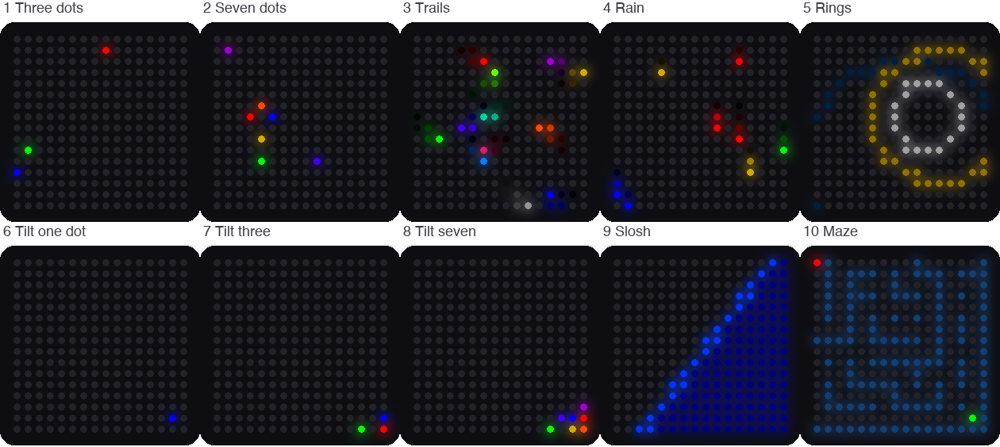

Lab 13: Modes
Pixel says...
 Now we put it all together! One program, ten light shows, and two buttons to switch between them.
Let's light this up!
Now we put it all together! One program, ten light shows, and two buttons to switch between them.
Let's light this up!
Program file: 13-modes.py
What you'll learn
- How one program can load other programs only when it needs them
- How a list of settings picks what each mode does
- How
tryandexceptcatch a button press and change modes - Why the Pico's memory matters
- How to add a mode of your own
What you'll need
- Your whole kit: the matrix, the accelerometer, and both buttons, wired as shown in the Kit Guide
- Every
.pyfile from the kit folder saved on the Pico. The quickest way is./upload-code.sh(see Get the Code onto the Pico) - Thonny open and connected to your Pico
- Ideas from Lab 3: Button Test, Lab 11, and Lab 12
The program
This program is the mode machine. Button 1 (GP14) loads the next mode. Button 2 (GP15) loads the previous one. When a mode starts, the matrix shows the mode number for a moment.
# Test 13: Modes
# Filename: 13-modes.py
# Version: 1.0.0
#
# Ten light shows in one program. Press button 1 (GPIO 14) for the next
# mode and button 2 (GPIO 15) for the previous one. The matrix shows the
# mode number for a moment, then the mode starts.
#
# 1 three slow bouncing dots (red, green, blue)
# 2 seven faster bouncing dots, one for each color of the rainbow
# 3 twelve colors that leave small trails
# 4 rainbow rain
# 5 ripple rings
# 6 a blue dot you roll by tilting the board
# 7 three dots that roll around as you tilt
# 8 seven dots that roll around as you tilt
# 9 sloshing water (program 11)
# 10 tilt-a-maze (program 12)
#
# Each mode is a separate module that is loaded only when you switch to it
# and thrown away when you leave, so the Pico never holds more than one
# mode in memory. Add a mode by writing a module with a run(settings)
# function and adding a line to MODES.
# Not yet tested on hardware.
import sys
import gc
import kit
print("Test 13: Modes (version 1.0.0)")
MODE_NUMBER_MS = 700 # how long the mode number shows before the mode starts
# (name, module to load, settings handed to the module's run() function)
MODES = [
("Three dots", "bounce_dots",
{"colors": [kit.RED, kit.GREEN, kit.BLUE], "speed": 4, "fade": 0}),
("Seven dots", "bounce_dots",
{"colors": kit.RAINBOW, "speed": 7, "fade": 0}),
("Colors with trails", "bounce_dots",
{"colors": kit.PALETTE, "speed": 9, "fade": 215}),
("Rainbow rain", "rain", None),
("Ripple rings", "rings", None),
("Tilt one dot", "tilt_balls",
{"colors": [kit.BLUE]}),
("Tilt three dots", "tilt_balls",
{"colors": [kit.RED, kit.GREEN, kit.BLUE]}),
("Tilt seven dots", "tilt_balls",
{"colors": kit.RAINBOW}),
("Sloshing water", "sloshing_water", None),
("Tilt-a-maze", "tilt_a_maze", None),
]
def unload(module_name):
# forget the module so its memory can be reused by the next mode
if module_name in sys.modules:
del sys.modules[module_name]
gc.collect()
kit.mode_buttons_on = True
mode = 0
while True:
name, module_name, settings = MODES[mode]
print("Mode", mode + 1, "-", name, "(module " + module_name + ")")
step = 1
module = None
try:
# a button press during any wait() raises kit.ModeChange
kit.draw_text(str(mode + 1))
kit.wait(MODE_NUMBER_MS)
module = __import__(module_name)
print(" RAM free:", gc.mem_free(), "bytes")
module.run(settings)
except kit.ModeChange as change:
step = change.args[0]
module = None # let go of the module, then forget it
kit.clear()
kit.strip.write()
unload(module_name)
mode = (mode + step) % len(MODES)
Run it. You should see a 1 on the matrix, then three slow dots bouncing. Press Button 1 to move on. Each press loads the next mode.
Test 13: Modes (version 1.0.0)
Mode 1 - Three dots (module bounce_dots)
RAM free: ...
Mode 2 - Seven dots (module bounce_dots)
The RAM free number depends on your Pico. Here are the ten modes:

This picture was drawn by a computer simulator, so your real matrix may look a little different.
| Mode | Show | Uses the tilt? |
|---|---|---|
| 1 | Three slow bouncing dots (red, green, blue) | No |
| 2 | Seven faster dots, one for each color of the rainbow | No |
| 3 | Twelve colors that leave small trails | No |
| 4 | Rainbow rain | No |
| 5 | Ripple rings | No |
| 6 | One blue dot that rolls as you tilt | Yes |
| 7 | Three dots that roll and bounce off each other | Yes |
| 8 | Seven rainbow dots that roll and bounce off each other | Yes |
| 9 | Sloshing water (Lab 11) | Yes |
| 10 | Tilt-a-maze (Lab 12) | Yes |
How it works
One module for each show
Each show lives in its own module. A module is a Python file that other programs can load. Some modules do double duty:
| Module | Used by |
|---|---|
kit.py |
Every mode: sets up the matrix, sensor, and buttons |
bounce_dots.py |
Modes 1, 2, and 3 |
rain.py |
Mode 4 |
rings.py |
Mode 5 |
tilt_balls.py |
Modes 6, 7, and 8 |
sloshing_water.py |
Mode 9 (and Lab 11) |
tilt_a_maze.py |
Mode 10 (and Lab 12) |
Modes 1, 2, and 3 all use bounce_dots, but they act differently. The difference comes from the settings.
A list of modes
MODES = [
("Three dots", "bounce_dots",
{"colors": [kit.RED, kit.GREEN, kit.BLUE], "speed": 4, "fade": 0}),
("Seven dots", "bounce_dots",
{"colors": kit.RAINBOW, "speed": 7, "fade": 0}),
("Colors with trails", "bounce_dots",
{"colors": kit.PALETTE, "speed": 9, "fade": 215}),
("Rainbow rain", "rain", None),
("Ripple rings", "rings", None),
("Tilt one dot", "tilt_balls",
{"colors": [kit.BLUE]}),
("Tilt three dots", "tilt_balls",
{"colors": [kit.RED, kit.GREEN, kit.BLUE]}),
("Tilt seven dots", "tilt_balls",
{"colors": kit.RAINBOW}),
("Sloshing water", "sloshing_water", None),
("Tilt-a-maze", "tilt_a_maze", None),
]
MODES is a list. Each item has three parts: a name, the module to load, and the settings to give that module. The settings are a dictionary, which is a set of labels with values, written in curly braces. For mode 1, the dictionary says "speed": 4. For mode 2, it says "speed": 7. The bounce_dots module reads these settings and acts differently each time.
Items with None have no settings. They do not need any.
Load a mode only when you need it
while True:
name, module_name, settings = MODES[mode]
print("Mode", mode + 1, "-", name, "(module " + module_name + ")")
step = 1
module = None
try:
# a button press during any wait() raises kit.ModeChange
kit.draw_text(str(mode + 1))
kit.wait(MODE_NUMBER_MS)
module = __import__(module_name)
print(" RAM free:", gc.mem_free(), "bytes")
module.run(settings)
except kit.ModeChange as change:
step = change.args[0]
module = None # let go of the module, then forget it
kit.clear()
kit.strip.write()
unload(module_name)
mode = (mode + step) % len(MODES)
The loop picks the current item from the list: name, module_name, settings = MODES[mode]. Then __import__(module_name) loads that module right now, from its name. The line module.run(settings) starts the show.
When you leave a mode, unload deletes the module from Python's list of loaded modules. gc.collect() is the garbage collector. It frees the memory that nothing uses anymore. A Pico has only about 230 thousand bytes of memory (RAM). Loading one mode at a time keeps plenty free. The RAM free line in the Shell shows you.
The last line, mode = (mode + step) % len(MODES), moves to the next mode. The % sign gives the remainder, so after mode 10 the count wraps back to mode 1. Button 2 gives a step of -1, so mode 1 wraps back to mode 10.
How a button stops a show
A show runs in a loop that never ends. How can a button press get out? The shows use kit.wait instead of sleep. Here is the code from kit.py:
class ModeChange(Exception):
# raised by wait() when a mode button is pressed: args[0] is 1 for the
# next mode (button 1) or -1 for the previous mode (button 2)
pass
def wait(ms):
# sleep for ms milliseconds, but notice a button press right away
check()
while ms > 0:
step = min(ms, 10)
sleep_ms(step)
ms -= step
check()
The wait function sleeps in 10 millisecond pieces. After each piece it calls check(), which looks at both buttons. If one was just pressed, check() raises a ModeChange. An exception is Python's way of shouting, stop what you are doing! The shout travels out of the show. The except kit.ModeChange line in 13-modes.py catches it. That line reads the step from the exception: 1 for Button 1 and -1 for Button 2. Then the loop starts the next mode.
Key idea
A program can be built from parts that you swap in and out. With separate modules, a new show needs one new file and one new line in a list.
Try it yourself
- Visit all ten modes with Button 1. Then press Button 2 on mode 1. Which mode comes up?
- Tilt the kit during modes 1 to 5. Does anything change? Try again in modes 6 to 8. Why?
-
Add a mode of your own. Create a new file named
color_cycle.py, save it on the Pico, and add one line toMODES.# color_cycle.py: fills the matrix with one color at a time import kit def run(settings): index = 0 while True: # dim the color, because all 256 pixels light at once color = kit.dim(kit.RAINBOW[index], 0.15) for i in range(kit.NUMBER_PIXELS): kit.strip[i] = color kit.strip.write() index = (index + 1) % len(kit.RAINBOW) kit.wait(700)Then add this line at the end of the
MODESlist in13-modes.py, right before the closing]:("Color cycle", "color_cycle", None),Run
13-modes.pyand press Button 2 on mode 1 to jump to your new mode 11.
Check your understanding
- What is a module? Name two modules from this kit.
- How do modes 1, 2, and 3 use the same module but look different?
- What does
__import__(module_name)do? - What happens when you press a button during a show?
- Why does the program unload a mode when you leave it?
Kit complete!
 You wired a kit, tested every part, and built a program that loads ten shows! You are a real light-maker now.
You wired a kit, tested every part, and built a program that loads ten shows! You are a real light-maker now.
What's next: Make your own mode, or head to the Hands on Labs to learn more patterns for LED strips.